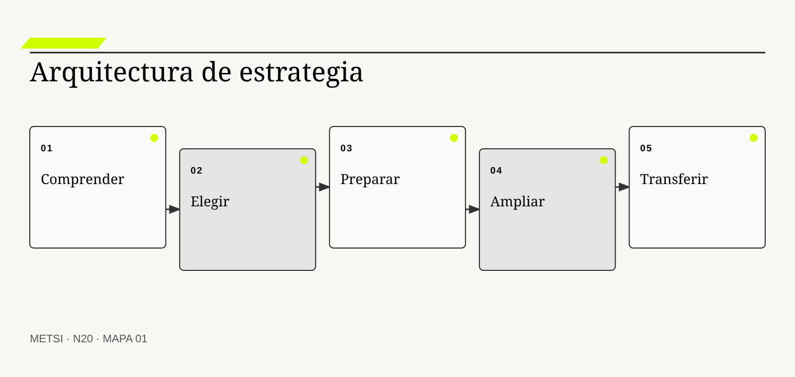
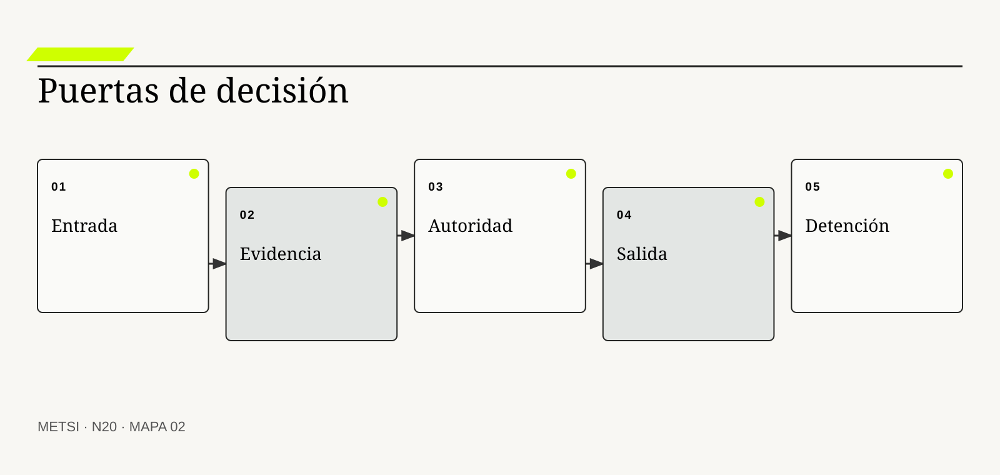
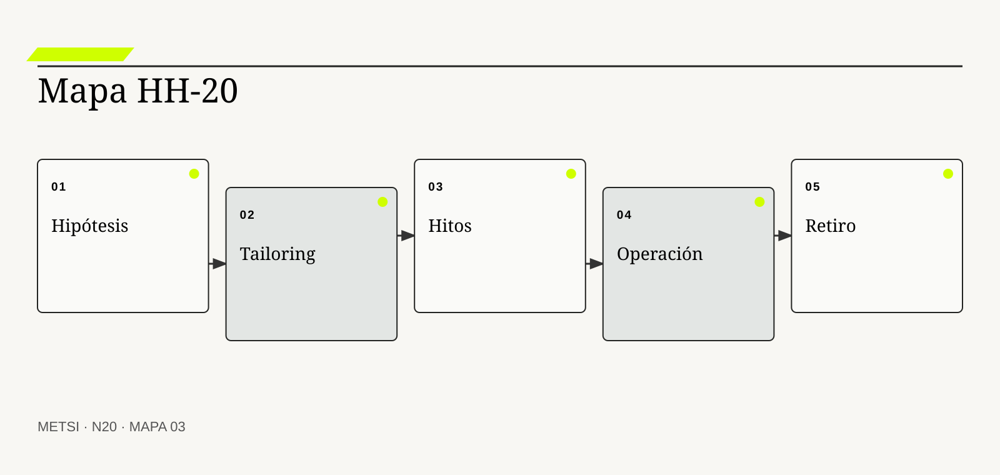

Project Management Institute
Formalizó tailoring y dominios de desempeño orientados a valor.

N20 compone una estrategia metodológica situada: selecciona procesos por función, adapta intensidad al riesgo, conecta hitos con evidencia y define…
Estrategia metodológica: tailoring, hitos y condiciones de salida
Ruta de lectura: problema, distinciones, decisiones, prueba, transferencia y preparación.
Nota. SIN NUM. identifica aparatos de orientación y referencia.
Seis voces para ampliar, contrastar y discutir N20.
Formalizó tailoring y dominios de desempeño orientados a valor.
Define procesos de ciclo de vida aplicables de manera iterativa y adaptada.

Vinculó compromiso progresivo y reducción de riesgo.

Explicó reflexión y revisión en la práctica profesional.
Mostró la relación entre estrategia deliberada y emergente.
Integra decisiones, puertas y criterios dentro del ciclo de vida de sistemas.
N20 no resume estas fuentes ni las convierte en receta. Las pone en tensión para construir juicio profesional.
¿Cómo componer una estrategia que coordine aprendizaje, entrega, gobierno y retiro sin convertir el método en receta ni la adaptación en improvisación?
Hotel Horizonte reúne todo lo aprendido: evidencia, actores, procesos, estados, modelos, contradicciones, legado y opciones de realización. La conducción arma una estrategia con descubrimiento, sprints, arquitectura, comité, piloto, tablero, retrospectivas y auditoría. Ninguna práctica parece incorrecta.
A los cuatro meses, todas siguen activas. El descubrimiento produce nuevos hallazgos sin cerrar preguntas. Los sprints entregan configuraciones que el piloto no absorbe. El comité revisa informes y nunca detiene. La auditoría solicita evidencia que nadie vinculó con decisiones. La abundancia metodológica creó trabajo sin arquitectura de compromiso.
El problema no es elegir una práctica mejor, sino definir para qué función existe cada una, qué información consume, qué decisión habilita y cuándo deja de ser necesaria. Una estrategia situada necesita forma temporal, autoridad y condiciones de salida.
La conducción reconstruye el recorrido desde la promesa. Conserva investigación hasta resolver tres incertidumbres, limita el piloto a una población, fija puertas de decisión y asigna responsables. El trabajo técnico no comienza donde falta obligación; la expansión no ocurre donde falta reparación; una práctica se retira cuando su función ya está cubierta.
El tailoring deja de ser recorte de ceremonias. Se convierte en diseño argumentado de procesos, evidencias, ritmos y controles según contexto. Cada adaptación registra motivo, riesgo, compensación y revisión.
N20 cierra el Bloque D. Integra HH-17, HH-18 y HH-19 en HH-20, una estrategia metodológica que puede ejecutarse, cuestionarse y terminar. Su producto no es un plan perfecto, sino una secuencia gobernada de compromisos y aprendizaje.
El dispositivo metodológico también declara qué estructuras son temporales, qué capacidades pasan a operación y qué evidencia seguirá observándose después del cierre. Terminar el dispositivo de cambio no significa abandonar el outcome ni congelar la solución. Significa transferir responsabilidad con condiciones suficientes para sostener, revisar y reparar sin depender del equipo que condujo la intervención.
HH-20 combina una baseline predictiva para obligaciones e integración, iteraciones sobre reglas, incrementos por capacidad, adaptación de prioridades y experimentos protegidos. Incorpora legado, contratos y trabajo manual. Define cinco puertas: comprender, elegir, preparar, ampliar y transferir. Cada una tiene evidencia, autoridad, contingencia y criterio de salida. El dispositivo metodológico termina cuando operación puede sostener la promesa y revisar sus propios supuestos.
N20 compone una estrategia metodológica situada: selecciona procesos por función, adapta intensidad al riesgo, conecta hitos con evidencia y define entrada, salida, detención, transferencia y retiro.
N19 deja evidencia y decisiones abiertas que N20 utiliza sin reabrir su contenido. N20 compone una estrategia metodológica situada: selecciona procesos por función, adapta intensidad al riesgo, conecta hitos con evidencia y define entrada, salida, detención, transferencia y retiro.
N21 abrirá el Bloque E distinguiendo proyecto, producto, servicio y plataforma. N20 entrega una capacidad intervenida y gobernable sin decidir todavía qué objeto de gestión conviene privilegiar.

N20 compone una estrategia metodológica situada: selecciona procesos por función, adapta intensidad al riesgo, conecta hitos con evidencia y define entrada, salida…
Project Management Institute provee principios y dominios que deben adaptarse al contexto y al valor. En N20, ese aporte pone a prueba decisiones concretas y no funciona como respaldo ornamental. Su alcance se conserva en N20: ninguna referencia sustituye la evidencia reunida del caso ni la autoridad asignada necesaria para intervenir.
Project Management Institute explicita que elegir y adaptar el enfoque constituye un compromiso continua. En N20, ese aporte pone a prueba decisiones concretas y no funciona como respaldo ornamental. Su alcance se conserva en N20: ninguna referencia sustituye la evidencia reunida del caso ni la autoridad asignada necesaria para intervenir.
ISO/IEC/IEEE establece procesos de ciclo de vida sin prescribir un modelo único y admite aplicación iterativa y concurrente. En N20, ese aporte pone a prueba decisiones concretas y no funciona como respaldo ornamental. Su alcance se conserva en N20: ninguna referencia sustituye la evidencia reunida del caso ni la autoridad asignada necesaria para intervenir.
ISO/IEC/IEEE guía la aplicación situada de procesos de ciclo de vida y su tailoring. En N20, ese aporte pone a prueba decisiones concretas y no funciona como respaldo ornamental. Su alcance se conserva en N20: ninguna referencia sustituye la evidencia reunida del caso ni la autoridad asignada necesaria para intervenir.
ISO/IEC/IEEE vincula gestión de riesgo con información y procesos del ciclo de vida. En N20, ese aporte pone a prueba decisiones concretas y no funciona como respaldo ornamental. Su alcance se conserva en N20: ninguna referencia sustituye la evidencia reunida del caso ni la autoridad asignada necesaria para intervenir.
Boehm, B. W. organiza compromiso progresivo alrededor de riesgo y alternativas. En N20, ese aporte pone a prueba decisiones concretas y no funciona como respaldo ornamental. Su alcance se conserva en N20: ninguna referencia sustituye la evidencia reunida del caso ni la autoridad asignada necesaria para intervenir.
Schön, D. A. permite tratar la revisión del curso de acción como parte del trabajo profesional. En N20, ese aporte pone a prueba decisiones concretas y no funciona como respaldo ornamental. Su alcance se conserva en N20: ninguna referencia sustituye la evidencia reunida del caso ni la autoridad asignada necesaria para intervenir.
Mintzberg, H. y Waters, J. A. distinguen estrategia deliberada de patrones que emergen durante la acción. En N20, ese aporte pone a prueba decisiones concretas y no funciona como respaldo ornamental. Su alcance se conserva en N20: ninguna referencia sustituye la evidencia reunida del caso ni la autoridad asignada necesaria para intervenir.
SEBoK conecta contexto, objetivos, medidas, alternativas y autoridad. En N20, ese aporte pone a prueba decisiones concretas y no funciona como respaldo ornamental. Su alcance se conserva en N20: ninguna referencia sustituye la evidencia reunida del caso ni la autoridad asignada necesaria para intervenir.
SEBoK fundamenta puertas con criterios de entrada, salida y autoridad real. En N20, ese aporte pone a prueba decisiones concretas y no funciona como respaldo ornamental. Su alcance se conserva en N20: ninguna referencia sustituye la evidencia reunida del caso ni la autoridad asignada necesaria para intervenir.
NIST incorpora gobierno, medición y manejo del riesgo de inteligencia artificial. En N20, ese aporte pone a prueba decisiones concretas y no funciona como respaldo ornamental. Su alcance se conserva en N20: ninguna referencia sustituye la evidencia reunida del caso ni la autoridad asignada necesaria para intervenir.
Beck, K. et al. aportan principios para responder al cambio sin convertirlos en una receta de prácticas. En N20, ese aporte pone a prueba decisiones concretas y no funciona como respaldo ornamental. Su alcance se conserva en N20: ninguna referencia sustituye la evidencia reunida del caso ni la autoridad asignada necesaria para intervenir.

Una estrategia afirma cómo una combinación de acciones producirá capacidad bajo condiciones explícitas. La definición fija el objeto de decisión. Si el equipo de N20 no puede expresar qué compromiso organiza, la categoría funciona como etiqueta y no como instrumento.
Se confunde con plan, cronograma o catálogo de prácticas. La distinción evita que una palabra familiar oculte otro mecanismo. En N20, confundirlos cambia qué se observa, qué se acepta como avance y quién debe intervenir.
En estrategia como hipótesis, el recorrido causal debe mostrar qué condición habilita la acción, qué transformación ocurre y quién absorbe el resultado. Vincula mecanismo, evidencia, riesgos y decisiones en una secuencia refutable. Si un salto depende sólo de una explicación oral, la estrategia todavía no puede gobernarlo.
La evidencia relevante para estrategia como hipótesis no se limita al resultado promedio. Señales tempranas y resultados adversos permiten revisar antes del cierre. N20 busca además casos negativos, diferencias entre poblaciones y señales de que la explicación elegida podría ser insuficiente.
Ejemplo. El hotel espera reducir espera sin aumentar reasignaciones ni inequidad. En N20, el episodio vuelve visible la relación entre ritmo, autoridad, evidencia y capacidad de reparación.
El tradeoff central de estrategia como hipótesis aparece entre anticipar y preservar opciones. Anticipar puede reducir coordinación y también fijar una premisa prematura; preservar opciones puede producir aprendizaje y también demorar una protección necesaria. La elección debe declarar cuál de esos costos acepta, durante cuánto tiempo y para quién.
La auditoría de estrategia como hipótesis termina con una pregunta de uso: ¿qué podría decidir ahora una persona que antes no podía? En N20, la respuesta debe nombrar una acción, una restricción y una evidencia, no sólo una comprensión mejorada.
Operacionalizar estrategia como hipótesis requiere asignar una unidad observable. La conducción define qué episodio contará, desde qué momento, con qué población y bajo qué fuente. Después compara al menos un caso ordinario con otro que fuerce excepción. Esta precisión en N20 evita que una conclusión general se sostenga sólo en ejemplos convenientes.
La decisión profesional no termina en adoptar estrategia como hipótesis. Se compara una ruta principal con una explicación rival, se explicita quién queda expuesto y se conserva un modo de revisar. Una buena ejecución no valida una hipótesis si el outcome cambió por otra causa. El límite forma parte del diseño y no una nota posterior.
Tailoring selecciona y adapta procesos según la función que deben cumplir. Conviene comenzar por su función profesional. Si el equipo de N20 no puede expresar qué compromiso organiza, la categoría funciona como etiqueta y no como instrumento.
No es eliminar controles para acelerar ni copiar un marco parcialmente. El contraste importa porque conduce a pruebas distintas. En N20, confundirlos cambia qué se observa, qué se acepta como avance y quién debe intervenir.
El mecanismo de tailoring por función no se presume por el nombre. Comprender, decidir, coordinar, verificar, aprender y gobernar exigen prácticas y evidencias diferentes. Debe localizarse dónde comienza, qué relaciones activa, qué demora introduce y qué capacidad de reparación queda disponible cuando la expectativa no se cumple.
Una afirmación sobre tailoring por función gana fuerza cuando puede reconstruirse desde fuentes independientes. Una matriz función práctica muestra cobertura, duplicación y huecos. La ausencia de señal también se interpreta: puede significar estabilidad, mala observación o exclusión del caso que más importa.
Ejemplo. La entrevista produce evidencia; la puerta autoriza compromiso; la retrospectiva revisa mecanismo. En N20, el episodio vuelve visible la relación entre ritmo, autoridad, evidencia y capacidad de reparación.
La escala modifica tailoring por función. Una solución válida para un equipo puede fallar cuando atraviesa sedes, turnos o proveedores porque aumenta la distancia entre señal y autoridad. Antes de ampliar, N20 prueba si la misma decisión conserva significado y reparación bajo esa nueva distribución.
Para evitar consenso aparente, tailoring por función se revisa con alguien afectado y con alguien responsable de reparar. Las dos perspectivas pueden valorar resultados diferentes y obligan a declarar la prioridad elegida.
En la práctica, tailoring por función atraviesa más de un área. Se identifican handoffs, esperas, decisiones y datos que cada participante puede ver. Cuando dos áreas usan evidencia distinta en N20, el expediente conserva la divergencia hasta determinar si representa error, perspectiva legítima o una brecha que la estrategia debe resolver.
En una revisión, tailoring por función debe responder tres preguntas: qué mejora, qué desplaza y qué vuelve más difícil de revertir. Reducir forma sin reemplazar función crea una ausencia invisible. Si esas respuestas cambian, también debe cambiar el compromiso, aunque el trabajo previo haya sido técnicamente correcto.
Los factores situacionales son condiciones que modifican qué estrategia resulta defendible. El concepto adquiere valor cuando cambia un compromiso. Si el equipo de N20 no puede expresar qué compromiso organiza, la categoría funciona como etiqueta y no como instrumento.
No son excusas contextuales ni una lista decorativa. Su vecino conceptual puede parecer equivalente y no lo es. En N20, confundirlos cambia qué se observa, qué se acepta como avance y quién debe intervenir.
Comprender factores situacionales exige seguir la decisión en el tiempo. Consecuencia, incertidumbre, regulación, legado, escala, distribución y capacidad cambian intensidad y secuencia. El análisis distingue condición, intervención, señal temprana y consecuencia para evitar atribuir a una práctica un efecto producido por otro cambio simultáneo.
El control de factores situacionales debe formularse antes de conocer el resultado. Episodios y restricciones verificables sostienen la caracterización. Se registra qué observación sostendría continuar, cuál obligaría a adaptar y cuál activaría detención o escalamiento.
Ejemplo. Una operación permanente exige recuperación distinta de un prototipo interno. En N20, el episodio vuelve visible la relación entre ritmo, autoridad, evidencia y capacidad de reparación.
El tiempo también altera factores situacionales. Una evidencia suficiente para explorar puede ser insuficiente para operar de forma permanente. Por eso se separan prueba local, compromiso transitorio y condición estable, y cada estado conserva fecha, alcance y responsable de revisión.
El registro de factores situacionales conserva una explicación rival. Si esa alternativa predice mejor el episodio siguiente, el equipo cambia de curso sin reescribir retrospectivamente lo que creía saber.
La gobernanza de factores situacionales incluye quién puede proponer, aprobar, ejecutar, observar y reparar. Esas funciones no se presumen por cargo ni por permiso técnico. N20 las prueba en un escenario donde falta la persona habitual, porque una capacidad que sólo funciona con conocimiento privado todavía no pertenece a la organización.
El juicio sobre factores situacionales incluye distribución de consecuencias. Clasificar mal el contexto puede legitimar exceso de control o exposición imprudente. Una mejora agregada no alcanza si concentra espera, riesgo o trabajo invisible en un grupo sin autoridad para discutir la decisión.
La arquitectura de decisiones ordena qué debe decidirse, por quién, con qué evidencia y dependencia. La definición fija el objeto de decisión. Si el equipo de N20 no puede expresar qué compromiso organiza, la categoría funciona como etiqueta y no como instrumento.
No coincide con estructura de reuniones. La distinción evita que una palabra familiar oculte otro mecanismo. En N20, confundirlos cambia qué se observa, qué se acepta como avance y quién debe intervenir.
La explicación operacional de arquitectura de decisiones conecta personas, reglas y tecnología. Decisiones irreversibles o habilitantes preceden compromisos que dependen de ellas. Esa conexión permite decidir qué parte puede modificarse localmente y cuál requiere coordinación con otras autoridades o capacidades.
Para auditar arquitectura de decisiones, conviene combinar evidencia de diseño, ejecución y consecuencia. Un mapa de dependencias y autoridad revela cuellos y decisiones huérfanas. Ninguna fuente domina automáticamente; una especificación correcta puede convivir con una operación dañina.
Ejemplo. No se comunica una promesa antes de validar capacidad y reparación. En N20, el episodio vuelve visible la relación entre ritmo, autoridad, evidencia y capacidad de reparación.
Existe además una dimensión política en arquitectura de decisiones. La opción más eficiente puede reducir la capacidad de una persona para cuestionar un compromiso o trasladar trabajo sin reconocerlo. N20 registra esa distribución y no la esconde dentro de un indicador agregado.
Una prueba adversa de arquitectura de decisiones introduce demora, ausencia de autoridad o dato incompleto. El objetivo de N20 no es cubrir todas las fallas, sino revelar si la estrategia mantiene una salida segura fuera del camino ordinario.
El indicador de arquitectura de decisiones se elige después de formular la decisión. Puede combinar tiempo, calidad, distribución y costo de reparación. Una cifra aislada rara vez explica el mecanismo. En N20, la lectura conjunta de señales evita optimizar velocidad mientras aumenta retrabajo, exclusión o dependencia.
La condición de cierre de arquitectura de decisiones no es perfección. Ordenar todo en serie alarga flujo; decisiones independientes pueden avanzar concurrentemente. Es evidencia suficiente para el uso previsto, riesgo residual aceptado por autoridad y una ruta clara cuando el supuesto deje de cumplirse.

Un hito es un estado verificable que habilita, limita o cambia decisiones posteriores. Conviene comenzar por su función profesional. Si el equipo de N20 no puede expresar qué compromiso organiza, la categoría funciona como etiqueta y no como instrumento.
No es una fecha, una presentación ni una actividad terminada. El contraste importa porque conduce a pruebas distintas. En N20, confundirlos cambia qué se observa, qué se acepta como avance y quién debe intervenir.
Para que hitos con consecuencia sea algo más que una etiqueta, debe existir una cadena examinable. Condensa evidencia suficiente y vuelve explícito el compromiso que ahora puede asumirse. La cadena incluye supuestos, handoffs y efectos laterales que una descripción ideal suele omitir.
La conducción no declara resuelto hitos con consecuencia por acuerdo retórico. Criterios observables, responsables y decisión registrada demuestran su realidad. Una persona ajena al diseño debe poder repetir la prueba y comprender por qué el resultado habilita un compromiso concreta.
Ejemplo. El piloto está listo cuando personal, monitoreo y contingencia funcionan juntos. En N20, el episodio vuelve visible la relación entre ritmo, autoridad, evidencia y capacidad de reparación.
La mantenibilidad de hitos con consecuencia se prueba mediante cambio deliberado. Se modifica una regla, una fuente o una dependencia y se observa quién detecta el impacto, cuánto tarda en responder y qué información necesita. En N20, si la respuesta depende de memoria privada, la capacidad todavía es frágil.
El costo de hitos con consecuencia se observa tanto en presupuesto como en atención, espera, coordinación y dependencia. Lo que no figura en una factura puede seguir siendo el costo que define la viabilidad.
La transición asociada con hitos con consecuencia necesita un estado intermedio explícito. Durante ese período conviven reglas, versiones o capacidades diferentes. N20 declara cuál rige para cada población, cómo se comunica y qué contingencia protege a quien podría quedar entre ambos sistemas.
El análisis de hitos con consecuencia evita dos extremos: conservar por inercia y cambiar por identidad metodológica. Un hito sin alternativa de acción es ceremonia y puede ocultar atraso. Entre ambos queda un compromiso provisional con fecha, responsable y prueba de revisión.
Los criterios de entrada protegen una actividad de comenzar sin condiciones mínimas. El concepto adquiere valor cuando cambia un compromiso. Si el equipo de N20 no puede expresar qué compromiso organiza, la categoría funciona como etiqueta y no como instrumento.
No son requisitos de perfección previa. Su vecino conceptual puede parecer equivalente y no lo es. En N20, confundirlos cambia qué se observa, qué se acepta como avance y quién debe intervenir.
El valor de criterios de entrada aparece al contrastar alternativas. Aseguran propósito, materiales, autoridad y capacidad para aprender o reparar. Si dos opciones producen el mismo entregable inmediato, el mecanismo permite compararlas por aprendizaje, dependencia, riesgo residual y posibilidad de salida.
La suficiencia de evidencia para criterios de entrada depende del costo de equivocarse. Una revisión rápida verifica evidencia y excepciones antes de consumir recursos. A mayor irreversibilidad o desigualdad de daño, mayor contraste, supervisión y autoridad se requieren.
Ejemplo. El experimento requiere población, consentimiento, fallback y monitoreo. En N20, el episodio vuelve visible la relación entre ritmo, autoridad, evidencia y capacidad de reparación.
Finalmente, criterios de entrada debe convivir con otras decisiones. Optimizarla de manera aislada puede empeorar flujo, seguridad o comprensión. HH-20 N20 explicita dependencias y evita que una mejora local se presente como outcome completo del sistema.
La revisión de criterios de entrada fija fecha y desencadenante. Puede ocurrir por incidente, cambio normativo, nueva población o evidencia acumulada. Sin esa regla en N20, un compromiso provisional se vuelve permanente por olvido.
El cierre de criterios de entrada debe sobrevivir a una revisión independiente. La evidencia, las decisiones y los límites se almacenan de manera que otra persona pueda cuestionarlos. En N20, la trazabilidad no busca eliminar desacuerdo; busca que el desacuerdo se concentre en supuestos examinables y no en recuerdos incompatibles.
El dispositivo metodológico debe poder explicar por qué criterios de entrada recibe cierta inversión y no otra. Criterios rígidos pueden bloquear investigación; deben corresponder al riesgo de la actividad. Esa explicación conecta valor, costo, aprendizaje y reparación, y permanece abierta a evidencia nueva.
Los criterios de salida definen qué evidencia permite cerrar, transferir, ampliar o detener. La definición fija el objeto de decisión. Si el equipo de N20 no puede expresar qué compromiso organiza, la categoría funciona como etiqueta y no como instrumento.
No equivalen a completar tareas ni gastar presupuesto. La distinción evita que una palabra familiar oculte otro mecanismo. En N20, confundirlos cambia qué se observa, qué se acepta como avance y quién debe intervenir.
En criterios de salida, el recorrido causal debe mostrar qué condición habilita la acción, qué transformación ocurre y quién absorbe el resultado. Conectan trabajo con decisión y evitan que una práctica continúe por inercia. Si un salto depende sólo de una explicación oral, la estrategia todavía no puede gobernarlo.
La evidencia relevante para criterios de salida no se limita al resultado promedio. Pruebas de outcome, estabilidad, comprensión y operación sostienen el cierre. N20 busca además casos negativos, diferencias entre poblaciones y señales de que la explicación elegida podría ser insuficiente.
Ejemplo. La expansión exige menor espera y ninguna pérdida de protección accesible. En N20, el episodio vuelve visible la relación entre ritmo, autoridad, evidencia y capacidad de reparación.
El tradeoff central de criterios de salida aparece entre anticipar y preservar opciones. Anticipar puede reducir coordinación y también fijar una premisa prematura; preservar opciones puede producir aprendizaje y también demorar una protección necesaria. La elección debe declarar cuál de esos costos acepta, durante cuánto tiempo y para quién.
La auditoría de criterios de salida termina con una pregunta de uso: ¿qué podría decidir ahora una persona que antes no podía? En N20, la respuesta debe nombrar una acción, una restricción y una evidencia, no sólo una comprensión mejorada.
Operacionalizar criterios de salida requiere asignar una unidad observable. La conducción define qué episodio contará, desde qué momento, con qué población y bajo qué fuente. Después compara al menos un caso ordinario con otro que fuerce excepción. Esta precisión en N20 evita que una conclusión general se sostenga sólo en ejemplos convenientes.
La decisión profesional no termina en adoptar criterios de salida. Se compara una ruta principal con una explicación rival, se explicita quién queda expuesto y se conserva un modo de revisar. Un criterio puede revisarse, pero el cambio necesita autoridad y registro. El límite forma parte del diseño y no una nota posterior.
Una condición de detención establece cuándo el daño, la falta de aprendizaje o el costo vuelven improcedente continuar. Conviene comenzar por su función profesional. Si el equipo de N20 no puede expresar qué compromiso organiza, la categoría funciona como etiqueta y no como instrumento.
No es pesimismo ni fracaso. El contraste importa porque conduce a pruebas distintas. En N20, confundirlos cambia qué se observa, qué se acepta como avance y quién debe intervenir.
El mecanismo de condición de detención no se presume por el nombre. Limita exposición antes de que costo hundido capture la decisión. Debe localizarse dónde comienza, qué relaciones activa, qué demora introduce y qué capacidad de reparación queda disponible cuando la expectativa no se cumple.
Una afirmación sobre condición de detención gana fuerza cuando puede reconstruirse desde fuentes independientes. Umbrales de seguridad, equidad, desempeño y capacidad deben monitorearse. La ausencia de señal también se interpreta: puede significar estabilidad, mala observación o exclusión del caso que más importa.
Ejemplo. Tres entregas fallidas suspenden el piloto y activan retorno manual. En N20, el episodio vuelve visible la relación entre ritmo, autoridad, evidencia y capacidad de reparación.
La escala modifica condición de detención. Una solución válida para un equipo puede fallar cuando atraviesa sedes, turnos o proveedores porque aumenta la distancia entre señal y autoridad. Antes de ampliar, N20 prueba si la misma decisión conserva significado y reparación bajo esa nueva distribución.
Para evitar consenso aparente, condición de detención se revisa con alguien afectado y con alguien responsable de reparar. Las dos perspectivas pueden valorar resultados diferentes y obligan a declarar la prioridad elegida.
En la práctica, condición de detención atraviesa más de un área. Se identifican handoffs, esperas, decisiones y datos que cada participante puede ver. Cuando dos áreas usan evidencia distinta en N20, el expediente conserva la divergencia hasta determinar si representa error, perspectiva legítima o una brecha que la estrategia debe resolver.
En una revisión, condición de detención debe responder tres preguntas: qué mejora, qué desplaza y qué vuelve más difícil de revertir. Detener sin aprender desperdicia evidencia; se conserva causa y decisión. Si esas respuestas cambian, también debe cambiar el compromiso, aunque el trabajo previo haya sido técnicamente correcto.

La cadencia de evidencia es el ritmo con que una estrategia puede conocer y revisar su desempeño. El concepto adquiere valor cuando cambia un compromiso. Si el equipo de N20 no puede expresar qué compromiso organiza, la categoría funciona como etiqueta y no como instrumento.
No coincide necesariamente con sprint, reporte o despliegue. Su vecino conceptual puede parecer equivalente y no lo es. En N20, confundirlos cambia qué se observa, qué se acepta como avance y quién debe intervenir.
Comprender cadencia de evidencia exige seguir la decisión en el tiempo. Alinea observación con la velocidad del fenómeno y el tiempo de daño. El análisis distingue condición, intervención, señal temprana y consecuencia para evitar atribuir a una práctica un efecto producido por otro cambio simultáneo.
El control de cadencia de evidencia debe formularse antes de conocer el resultado. Latencia, calidad y uso de señales muestran si la revisión llega a tiempo. Se registra qué observación sostendría continuar, cuál obligaría a adaptar y cuál activaría detención o escalamiento.
Ejemplo. Fraude se observa de inmediato y adopción necesita semanas. En N20, el episodio vuelve visible la relación entre ritmo, autoridad, evidencia y capacidad de reparación.
El tiempo también altera cadencia de evidencia. Una evidencia suficiente para explorar puede ser insuficiente para operar de forma permanente. Por eso se separan prueba local, compromiso transitorio y condición estable, y cada estado conserva fecha, alcance y responsable de revisión.
El registro de cadencia de evidencia conserva una explicación rival. Si esa alternativa predice mejor el episodio siguiente, el equipo cambia de curso sin reescribir retrospectivamente lo que creía saber.
La gobernanza de cadencia de evidencia incluye quién puede proponer, aprobar, ejecutar, observar y reparar. Esas funciones no se presumen por cargo ni por permiso técnico. N20 las prueba en un escenario donde falta la persona habitual, porque una capacidad que sólo funciona con conocimiento privado todavía no pertenece a la organización.
El juicio sobre cadencia de evidencia incluye distribución de consecuencias. Medir demasiado pronto produce ruido; medir tarde normaliza consecuencias. Una mejora agregada no alcanza si concentra espera, riesgo o trabajo invisible en un grupo sin autoridad para discutir la decisión.
El gobierno proporcional asigna autoridad y control según consecuencia, incertidumbre e irreversibilidad. La definición fija el objeto de decisión. Si el equipo de N20 no puede expresar qué compromiso organiza, la categoría funciona como etiqueta y no como instrumento.
No es menos gobierno por defecto ni comité para todo. La distinción evita que una palabra familiar oculte otro mecanismo. En N20, confundirlos cambia qué se observa, qué se acepta como avance y quién debe intervenir.
La explicación operacional de gobierno proporcional conecta personas, reglas y tecnología. Decisiones locales preservan fluidez y escalamiento protege compromisos críticos. Esa conexión permite decidir qué parte puede modificarse localmente y cuál requiere coordinación con otras autoridades o capacidades.
Para auditar gobierno proporcional, conviene combinar evidencia de diseño, ejecución y consecuencia. Tiempos de decisión, excepciones y reparaciones permiten auditar diseño. Ninguna fuente domina automáticamente; una especificación correcta puede convivir con una operación dañina.
Ejemplo. Recepción resuelve casos ordinarios y escala cambios de promesa. En N20, el episodio vuelve visible la relación entre ritmo, autoridad, evidencia y capacidad de reparación.
Existe además una dimensión política en gobierno proporcional. La opción más eficiente puede reducir la capacidad de una persona para cuestionar un compromiso o trasladar trabajo sin reconocerlo. N20 registra esa distribución y no la esconde dentro de un indicador agregado.
Una prueba adversa de gobierno proporcional introduce demora, ausencia de autoridad o dato incompleto. El objetivo de N20 no es cubrir todas las fallas, sino revelar si la estrategia mantiene una salida segura fuera del camino ordinario.
El indicador de gobierno proporcional se elige después de formular la decisión. Puede combinar tiempo, calidad, distribución y costo de reparación. Una cifra aislada rara vez explica el mecanismo. En N20, la lectura conjunta de señales evita optimizar velocidad mientras aumenta retrabajo, exclusión o dependencia.
La condición de cierre de gobierno proporcional no es perfección. Centralizar puede silenciar contexto; distribuir sin límites puede producir arbitrariedad. Es evidencia suficiente para el uso previsto, riesgo residual aceptado por autoridad y una ruta clara cuando el supuesto deje de cumplirse.
Transferir significa que una capacidad puede sostenerse con roles, conocimiento, recursos, monitoreo y reparación. Conviene comenzar por su función profesional. Si el equipo de N20 no puede expresar qué compromiso organiza, la categoría funciona como etiqueta y no como instrumento.
No es desplegar ni entregar documentación. El contraste importa porque conduce a pruebas distintas. En N20, confundirlos cambia qué se observa, qué se acepta como avance y quién debe intervenir.
Para que transferencia a operación sea algo más que una etiqueta, debe existir una cadena examinable. Operación participa antes, practica escenarios y acepta obligaciones explícitas. La cadena incluye supuestos, handoffs y efectos laterales que una descripción ideal suele omitir.
La conducción no declara resuelto transferencia a operación por acuerdo retórico. Pruebas de guardia, recuperación y decisión sin el equipo creador verifican autonomía. Una persona ajena al diseño debe poder repetir la prueba y comprender por qué el resultado habilita un compromiso concreta.
Ejemplo. Un turno nocturno resuelve una excepción sin llamadas privadas. En N20, el episodio vuelve visible la relación entre ritmo, autoridad, evidencia y capacidad de reparación.
La mantenibilidad de transferencia a operación se prueba mediante cambio deliberado. Se modifica una regla, una fuente o una dependencia y se observa quién detecta el impacto, cuánto tarda en responder y qué información necesita. En N20, si la respuesta depende de memoria privada, la capacidad todavía es frágil.
El costo de transferencia a operación se observa tanto en presupuesto como en atención, espera, coordinación y dependencia. Lo que no figura en una factura puede seguir siendo el costo que define la viabilidad.
La transición asociada con transferencia a operación necesita un estado intermedio explícito. Durante ese período conviven reglas, versiones o capacidades diferentes. N20 declara cuál rige para cada población, cómo se comunica y qué contingencia protege a quien podría quedar entre ambos sistemas.
El análisis de transferencia a operación evita dos extremos: conservar por inercia y cambiar por identidad metodológica. Transferir demasiado temprano desplaza deuda; nunca transferir perpetúa dependencia del proyecto. Entre ambos queda un compromiso provisional con fecha, responsable y prueba de revisión.
Retirar prácticas y estructuras temporales es parte del diseño metodológico. El concepto adquiere valor cuando cambia un compromiso. Si el equipo de N20 no puede expresar qué compromiso organiza, la categoría funciona como etiqueta y no como instrumento.
Se confunde cierre administrativo con desaparición de capacidad. Su vecino conceptual puede parecer equivalente y no lo es. En N20, confundirlos cambia qué se observa, qué se acepta como avance y quién debe intervenir.
El valor de retiro de la estrategia aparece al contrastar alternativas. Funciones permanentes pasan a operación y mecanismos de aprendizaje conservan dueño. Si dos opciones producen el mismo entregable inmediato, el mecanismo permite compararlas por aprendizaje, dependencia, riesgo residual y posibilidad de salida.
La suficiencia de evidencia para retiro de la estrategia depende del costo de equivocarse. Inventarios, accesos, rituales y contratos muestran qué debe terminar o continuar. A mayor irreversibilidad o desigualdad de daño, mayor contraste, supervisión y autoridad se requieren.
Ejemplo. El comité del piloto se disuelve y la revisión de indicadores queda integrada en operación. En N20, el episodio vuelve visible la relación entre ritmo, autoridad, evidencia y capacidad de reparación.
Finalmente, retiro de la estrategia debe convivir con otras decisiones. Optimizarla de manera aislada puede empeorar flujo, seguridad o comprensión. HH-20 N20 explicita dependencias y evita que una mejora local se presente como outcome completo del sistema.
La revisión de retiro de la estrategia fija fecha y desencadenante. Puede ocurrir por incidente, cambio normativo, nueva población o evidencia acumulada. Sin esa regla en N20, un compromiso provisional se vuelve permanente por olvido.
El cierre de retiro de la estrategia debe sobrevivir a una revisión independiente. La evidencia, las decisiones y los límites se almacenan de manera que otra persona pueda cuestionarlos. En N20, la trazabilidad no busca eliminar desacuerdo; busca que el desacuerdo se concentre en supuestos examinables y no en recuerdos incompatibles.
El dispositivo metodológico debe poder explicar por qué retiro de la estrategia recibe cierta inversión y no otra. Mantener todo agrega burocracia; retirar memoria elimina responsabilidad. Esa explicación conecta valor, costo, aprendizaje y reparación, y permanece abierta a evidencia nueva.
El instrumento organiza un compromiso concreta y no una descripción total. Cada campo debe completarse con evidencia disponible, incertidumbre explícita y autoridad identificada. Si un campo todavía no puede responderse, se registra como asunto abierto y no se completa por inferencia.
HH-20 se prueba con un escenario ordinario y uno adverso. Una persona que no participó en su construcción debe poder reconstruir qué se decidió, por qué, qué permanece incierto y cuál es la próxima puerta. El cierre no exige certeza total; exige incertidumbre gobernada y una salida practicable.
Una facultad cambia el régimen de evaluación. La norma fija obligaciones, pero actividades, plataformas, accesibilidad y capacidad docente requieren adaptación.
HH-20 organiza decisiones, piloto, formación, soporte y revisión. Define qué puede variar por curso y qué permanece como derecho común. La puerta de ampliación exige evidencia de comprensión y posibilidad de reparación.
La transferencia muestra que una estrategia metodológica no pertenece sólo a software. Coordina cambio institucional, trabajo, evidencia y autoridad sin confundir uniformidad con coherencia.
Una organización declara transformación continua y conserva cada ceremonia, comité y tablero creado durante cinco años.
Nadie puede decir qué hipótesis sigue abierta ni qué estructura es temporal. La adaptación se vuelve identidad y el costo metodológico deja de discutirse.
HH-20 exige salida y retiro. Aprender continuamente no significa sostener indefinidamente todos los dispositivos de cambio.
El control integral de estrategia metodológica: tailoring, hitos y condiciones de salida toma un compromiso real y la recorre desde su origen hasta una consecuencia observable. Utiliza outcome y población, hipótesis estratégica, factores situacionales, decisiones y dependencias para evitar que el análisis quede dividido en artefactos independientes. Cada afirmación debe encontrar una fuente, una autoridad y una condición de revisión. Cuando dos registros no coinciden, la diferencia se conserva como hallazgo hasta explicar su mecanismo.
El escenario ordinario verifica que n20 compone una estrategia metodológica situada: selecciona procesos por función, adapta intensidad al riesgo, conecta hitos con evidencia y define entrada, salida, detención, transferencia y retiro. El escenario adverso modifica una dependencia, introduce demora y deja ausente a la persona que suele resolver. La conducción observa si la estrategia detecta el cambio, limita el daño, comunica incertidumbre y activa reparación sin recurrir a conocimiento privado.
La comparación incluye una alternativa descartada. Se documenta por qué no fue elegida, qué supuesto la volvería preferible y qué costo tendría recuperarla. Este ejercicio protege opciones futuras y evita presentar la decisión actual como única solución técnicamente posible. También vuelve discutibles los costos hundidos cuando aparece evidencia nueva.
El control concluye con una defensa breve ante una audiencia ajena al equipo. Esa audiencia debe poder reconstruir el problema, objetar la evidencia reunida y comprender por qué la salida propuesta es proporcional. Si sólo puede repetir la recomendación, el expediente todavía no sostiene un compromiso profesional. Si puede reconocer límites y actuar ante una excepción, existe capacidad transferible.
Elegir prácticas antes de funciones simplifica un compromiso que depende de propósito, evidencia y consecuencia. La velocidad inicial se paga cuando operación descubre el supuesto omitido. La recomposición vuelve al episodio, identifica quién absorbe el costo y define una prueba antes de continuar.
Llamar hito a una fecha parece reducir coordinación, pero confunde acuerdo con conocimiento suficiente. La conducción debe comparar una explicación rival, localizar autoridad y registrar qué señal cambiaría el curso elegido.
Iniciar sin autoridad ni contingencia desplaza incertidumbre hacia personas que no participaron de la elección. Corregirlo exige reconstruir el mecanismo, hacer visible el trabajo añadido y establecer una condición de salida proporcional al daño posible.
Cerrar por actividad completada convierte una práctica en fin. La revisión pregunta qué función debía cumplir, qué evidencia produjo y por qué sigue siendo necesaria. Si la función desapareció, la práctica se adapta o se retira.
Cambiar criterios después de ver el resultado oculta una frontera. El artefacto puede cerrar y la capacidad seguir incompleta. Un escenario adverso permite observar handoffs, excepciones y reparación antes de ampliar compromiso.
Medir con una única cadencia confunde cumplimiento formal con decisión defendible. Se necesita conectar fuente, interpretación, implementación y efecto, incluyendo la autoridad asignada que acepta el riesgo residual.
Centralizar toda decisión suele premiar lo visible y dejar fuera mantenimiento, soporte y aprendizaje. La recomposición compara el ciclo completo, documenta dependencia y ensaya una salida real.
Transferir sólo archivos reduce diversidad de casos a un promedio conveniente. Se revisan poblaciones, extremos y daños asimétricos para evitar que una mejora global silencie una pérdida crítica.
Mantener estructuras temporales borra memoria y vuelve inexplicable el cambio de rumbo. Una baseline y un registro breve permiten conservar razones sin inmovilizar la estrategia.
Usar tailoring para ocultar pérdida de rigor deja responsabilidad sin capacidad. El diseño debe unir permiso, recursos, evidencia y posibilidad de reparar; nombrar un dueño no crea por sí mismo una función operativa.
N20 compone una estrategia metodológica situada: selecciona procesos por función, adapta intensidad al riesgo, conecta hitos con evidencia y define entrada, salida, detención, transferencia y retiro. Esta capacidad permite discutir costo, riesgo y responsabilidad sin esconder decisiones detrás de una etiqueta técnica.

La evidencia nunca elimina por completo el juicio.
La evidencia nunca elimina por completo el juicio. Restricciones legales, relaciones de poder, capacidad operativa y costos hundidos reducen el espacio de opciones. El instrumento debe hacer visibles esas condiciones y conservar una vía de revisión, no prometer neutralidad.
N21 abrirá el Bloque E distinguiendo proyecto, producto, servicio y plataforma. N20 entrega una capacidad intervenida y gobernable sin decidir todavía qué objeto de gestión conviene privilegiar.
N20 compone una estrategia metodológica situada: selecciona procesos por función, adapta intensidad al riesgo, conecta hitos con evidencia y define entrada, salida, detención, transferencia y retiro.
El bloque no propone reemplazar una doctrina por otra. Propone hacer visibles las decisiones que cada práctica organiza, la evidencia reunida que necesita y los daños que puede producir. El resultado es una intervención que puede explicarse, probarse y revisarse.
Estrategia como hipótesis: una estrategia afirma cómo una combinación de acciones producirá capacidad bajo condiciones explícitas.
Tailoring por función: tailoring selecciona y adapta procesos según la función que deben cumplir.
Factores situacionales: los factores situacionales son condiciones que modifican qué estrategia resulta defendible.
Arquitectura de decisiones: la arquitectura de decisiones ordena qué debe decidirse, por quién, con qué evidencia y dependencia.
Hitos con consecuencia: un hito es un estado verificable que habilita, limita o cambia decisiones posteriores.
Criterios de entrada: los criterios de entrada protegen una actividad de comenzar sin condiciones mínimas.
Criterios de salida: los criterios de salida definen qué evidencia permite cerrar, transferir, ampliar o detener.
Condición de detención: una condición de detención establece cuándo el daño, la falta de aprendizaje o el costo vuelven improcedente continuar.
Cadencia de evidencia: la cadencia de evidencia es el ritmo con que una estrategia puede conocer y revisar su desempeño.
Gobierno proporcional: el gobierno proporcional asigna autoridad y control según consecuencia, incertidumbre e irreversibilidad.
Transferencia a operación: transferir significa que una capacidad puede sostenerse con roles, conocimiento, recursos, monitoreo y reparación.
Retiro de la estrategia: retirar prácticas y estructuras temporales es parte del diseño metodológico.
Para el encuentro, seleccionar una intervención conocida, completar el instrumento con evidencia verificable y preparar un compromiso provisional. Incluir una explicación rival, una condición que obligaría a revisar y una consecuencia para una persona afectada.